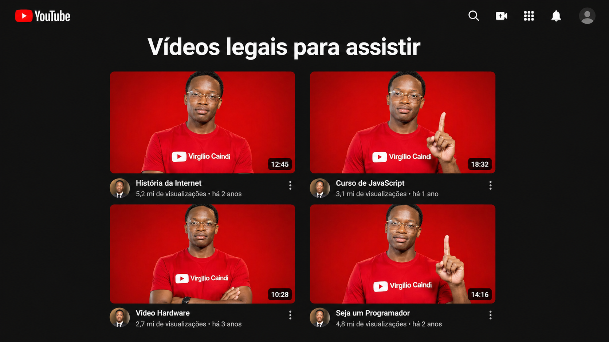

Virgilio Neto Caindi
Formação em Dev Web, com especialização em Hacker ético, Cybersecurity e Engenharia sócial. Apaixonado por tecnológia e sempre em busca de novos desafios. Atualmente, atuo como Bug hunter e Desenvolvidor na Conecxão Web Angola, compartilhando conhecimento atráves de cursos online e projetos de código aberto.
Minhas skills
Dev Web
90%
Hacker ético
60%
Cybersecurity
35%
Engenharia sócial
100%
programação js node
60%
programação PHP
45%
Bug hunter
25%
Comunicação
95%
Liderança
80%
Trabalho em equipa
89%
English
25%
Adaptalidade
100%
Formação
2026-2026
Curso em video e CEFTIC
HTML5 E CSS3
2026-2026
Curso em video e CEFTIC
JS node e PHP
2026-2026
CEFTIC
Segurança da informação e Segurança Web
2026-2026
CEFTIC
Hacker ético e Cybersecurity
2025-2026
Curso em video
English
2025-2025
Udemy
Engenharia sócial
Projetos

2025
Projeto de videos
Projeto construido para treinar a inserção de videos em nosso site.
Saiba mais...
O projeto sobre o YouTube foi desenvolvido com o objetivo de compreender melhor o funcionamento de uma das maiores plataformas digitais do mundo. Através dele, busquei analisar como o YouTube influencia a comunicação, o entretenimento e a disseminação de informação na sociedade atual. Além disso, o projeto permitiu explorar aspectos como criação de conteúdo, engajamento do público e o impacto das redes sociais no cotidiano das pessoas.

2026
Projeto Cordel
Projeto construido para treinar efeito paralax em imagens.
Saiba mais...
O projeto de cordel sobre poesias foi desenvolvido com o objetivo de valorizar a literatura popular e explorar a criatividade por meio da escrita poética. Através dele, busquei compreender as características do cordel, como a linguagem simples, o ritmo e as rimas, além de destacar sua importância cultural. O projeto também teve como finalidade aprender a fixar imagens e conteúdos na memória de forma mais eficaz, utilizando a associação entre texto e elementos visuais. Além disso, incentivou o gosto pela leitura e pela produção de textos.

2026
Projeto Android
Projeto para treinar conteúdos e imagens dinâmicas.
Saiba mais...
O projeto sobre o Android e a história de sua mascote foi desenvolvido com o objetivo de compreender a origem e a evolução do sistema operacional Android, bem como conhecer a história por trás de seu famoso símbolo. Através dele, explorei como surgiu a mascote Bugdroid, seu significado e sua importância para a identidade da marca. O projeto também contribuiu para ampliar o conhecimento sobre tecnologia, design e comunicação visual, além de estimular a curiosidade e o interesse por inovação.

2026
Projeto Mobile
Desafio de link feito por icons e imagens de fundo.
Saiba mais...
O projeto mobile foi desenvolvido com o objetivo de aprender a utilizar recursos visuais em aplicações, especialmente o uso de background image. Através dele, busquei compreender como aplicar imagens de fundo de forma adequada, melhorando a estética e a organização da interface. Além disso, o projeto teve como finalidade ajudar na fixação do conteúdo aprendido, utilizando a prática como forma de reforçar o conhecimento e desenvolver habilidades no desenvolvimento de aplicações mobile.

2026
Projeto Login
Projeto para treinar formulário em site web.
Saiba mais...
O projeto de login foi desenvolvido com o objetivo de aprender a criar formulários e sistemas de autenticação para acesso a um determinado site. Através dele, busquei compreender como funcionam processos de cadastro e entrada de utilizadores, incluindo validação de dados e organização das informações. Além disso, o projeto contribuiu para o desenvolvimento de habilidades práticas em programação e reforçou a compreensão sobre a importância da segurança e da experiência do utilizador em sistemas digitais.

2026
Projeto Album
Projeto para treinar responsividade de fotos e album responsivo.
Saiba mais...
O projeto de álbum foi desenvolvido com o objetivo de aprender a enquadrar imagens e fotografias de forma adequada em diferentes layouts. Através dele, busquei compreender como organizar e apresentar fotos de maneira visualmente agradável, além de aplicar técnicas de design responsivo. O projeto também teve como finalidade garantir que as imagens se adaptem corretamente a diferentes dispositivos, como mobile, desktop e MacBook, proporcionando uma boa experiência ao utilizador em qualquer tela.